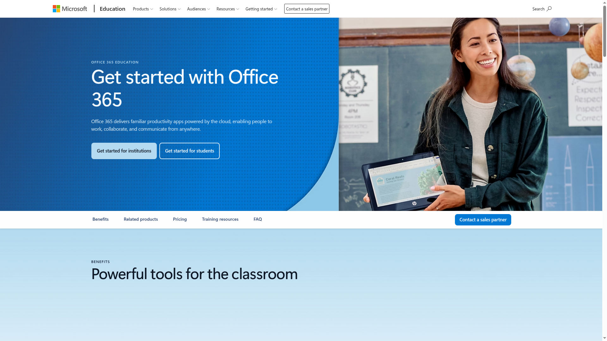
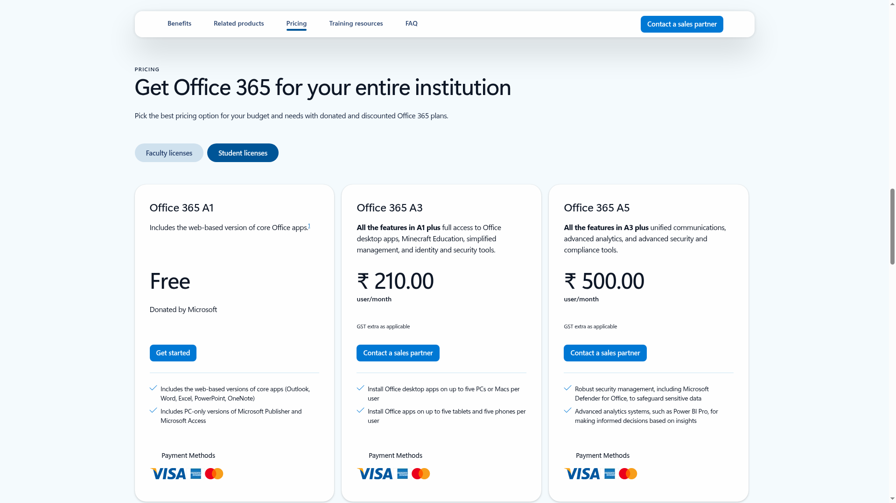
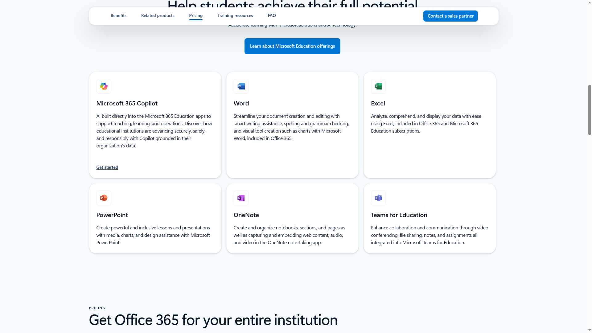
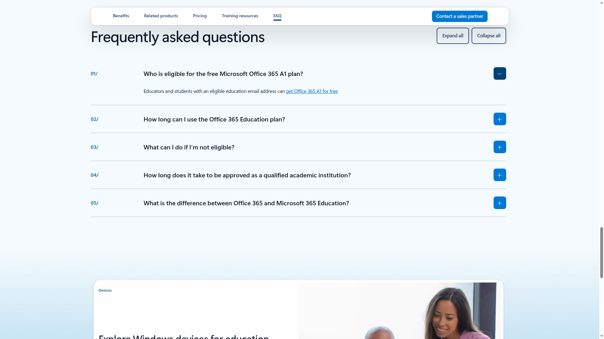

Office 365 Education free for students: Word, Excel, PowerPoint with an education email
Students and educators with an eligible education email address can get Office 365 A1 for free - web versions of Word, Excel, PowerPoint, OneNote and Outlook, plus PC-only Publisher and Access. Microsoft lists the A1 plan as "Free - Donated by Microsoft" on its India education page, and there is no deadline: it is an ongoing donated plan, not a limited offer.

Who can apply
- Students and educators with an eligible education email address
- A Microsoft account (free to create during signup)
- Works while you are enrolled in or working at a qualified educational organisation - eligibility may be re-verified
What you get (checked 20 October 2026)
- Office 365 A1: Free, "Donated by Microsoft"
- Web-based versions of Outlook, Word, Excel, PowerPoint and OneNote
- PC-only versions of Microsoft Publisher and Microsoft Access
- Teams for Education is part of the Office 365 Education experience described on the page
- Paid upgrades if you ever need them: A3 at ₹210 and A5 at ₹500 per user/month (student licenses tab, GST extra)
- Related on Microsoft's students page: 50% off Microsoft 365 with a college email, and 10% off select devices - separate paid offers
How to apply: step by step

- Keep your college or school email address ready. It must be an eligible education email - personal Gmail or Outlook addresses will not qualify.

- Enter your education email on Microsoft's signup page and complete the verification with your Microsoft account. Approval is often instant through automated verification; where the institution itself needs verification, Microsoft says it can take up to a month.

- Once approved, sign in at office.com with your education account and start using Word, Excel, PowerPoint and OneNote on the web. Publisher and Access work on PC.

- If your plan ever expires, re-verify your student status to extend it, or move to a personal plan. Expired plans drop to view-only mode.
Watch: apply step by step
- English: How to Get Office 365 Free for Students - Kevin Stratvert, 2019. A clear walkthrough of the same school-email signup by a well-known former Microsoft creator; the flow matches what the official page shows today.
- Malayalam: we could not find a reliable Malayalam video covering this signup. The official pages below are the source of truth.
This video is by an independent creator, not Microsoft - always cross-check details on the official pages linked below. Offer details above are from Microsoft's Office 365 Education page (India) and the Microsoft education students page, checked 20 October 2026.
Sources: Microsoft Office 365 Education, Microsoft Education - Students. Checked 20 October 2026. This is an AiCoN explainer, not affiliated with Microsoft.